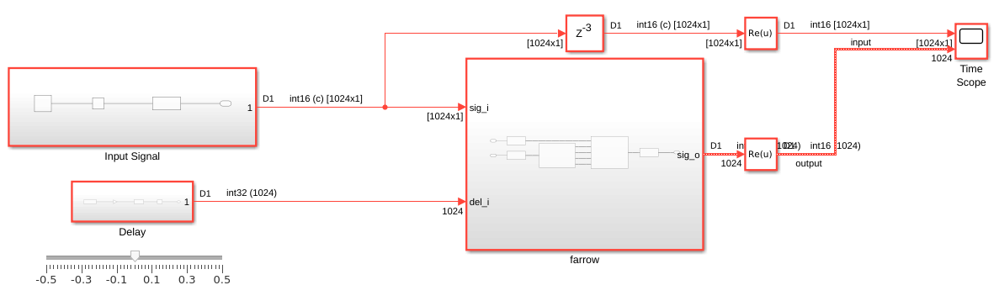
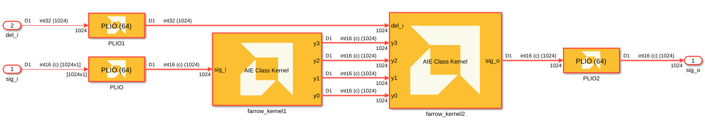
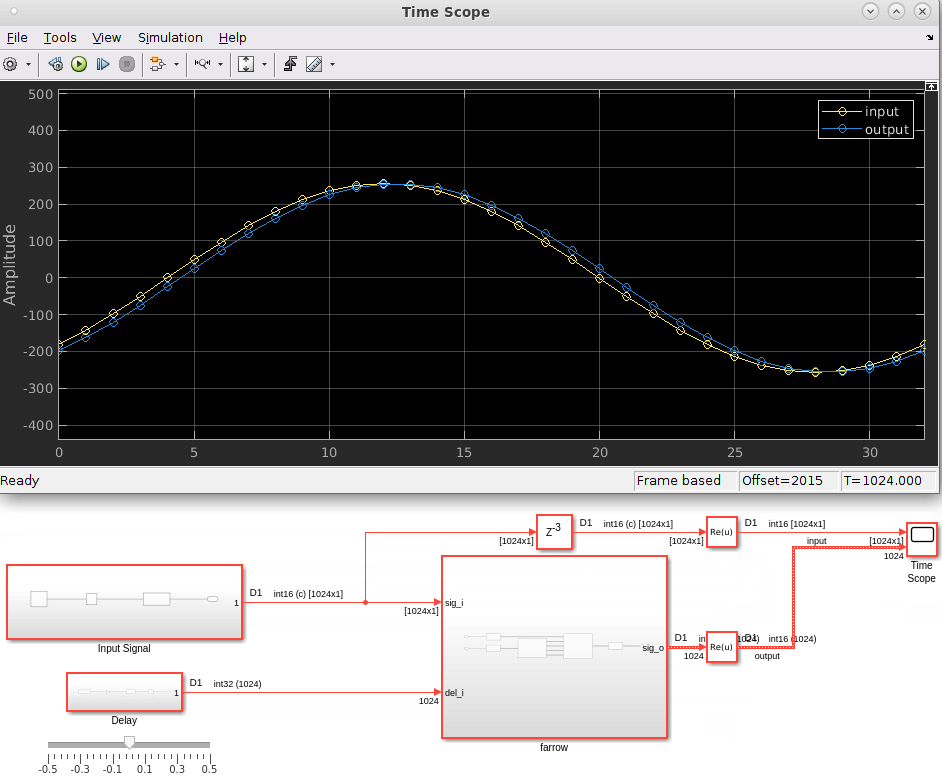
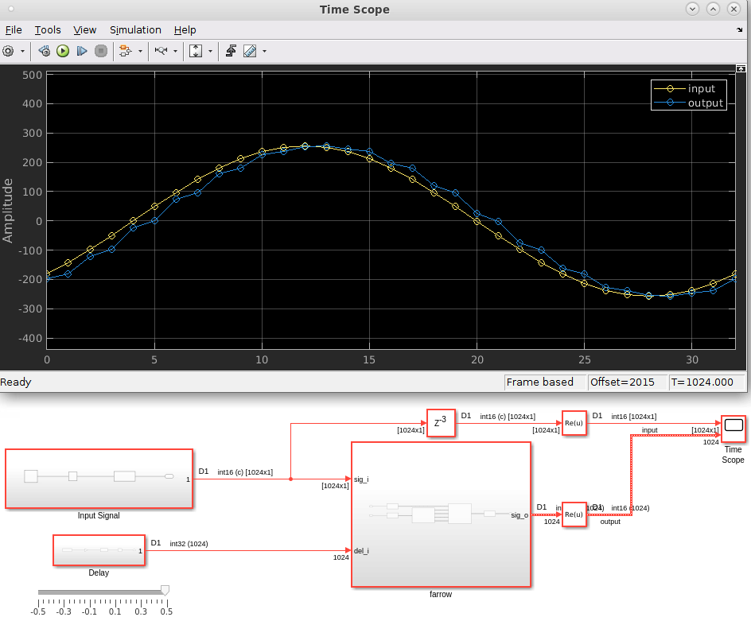
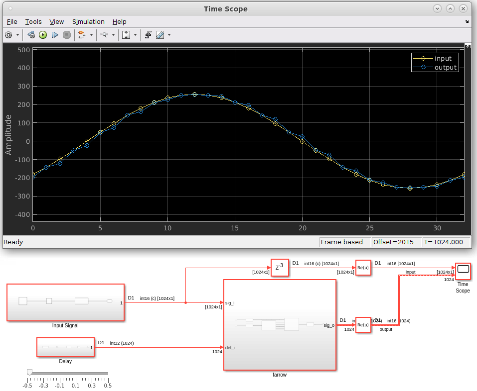
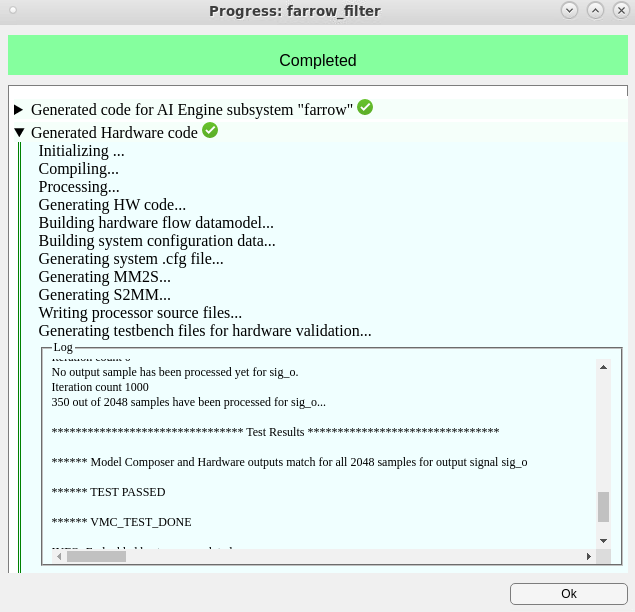

This example demonstrates a Vitis Model Composer testbench for a fractional delay Farrow filter, implemented on AI Engines.
A fractional delay filter is a common digital signal processing (DSP) algorithm found in many applications including digital receivers in modems and is required for timing synchronization.
Assuming you have a signal x sampled uniformly with a sampling frequency Fs (samples per second), this means samples exist at x(n*Ts) where Ts=1/Fs and n is an integer. Because the receiver timing is initially unknown, demodulating the signal at these intervals can result in inter-symbol interference due to samples not landing in the middle of the eye diagram.
This introduces the need for a fractional delay filter so samples can be produced at x(n*Ts + u*Ts) where -0.5 < u < 0.5 is the unknown fractional delay parameter to be identified at the receiver. In some cases, this fractional delay is time-varying, for example, as u(n*Ts), and so the time-recovered signal can be given as x(n*Ts + u(n*Ts) * Ts).
Reference [1] provides some background on timing recovery in such systems. An efficient realization of a continuously variable fractional delay filter is shown by C. W. Farrow in [2].
We implement the 3rd order Farrow filter depicted in the following figure.
Figure 1 - Farrow Filter with Polynomial Order p = 3
More details on the Farrow filter design for AI Engines can be found in the Vitis-Tutorials repository.
The Farrow filter complies with the following requirements:
| Requirements | |
|---|---|
| Sampling rate | 1 Gsps |
| I/O data type | cint16 |
| Coefficients data type | int16 |
| Delay input data type | int16 |
The filter achieves the following frequency and time domain responses.

Figure 2 - Farrow Filter with Polynomial Order p = 3 - Frequency Response

Figure 3 - Farrow Filter with Polynomial Order p = 3 - Time Domain Response
The MATLAB script study_farrow.m to design the filter and produce these plots is provided for your reference.
The Simulink model contains a testbench that provides input to the Farrow filter and compares it to the output.

The DUT (AI Engine subsystem farrow) has two inputs. The first input is the signal to be filtered, and the second input is the fractional delay (-0.5 to 0.5). A slider allows you to change the fractional delay while the simulation is running. (The Delay subsystem converts the delay value to an int32 for input to the DUT.)
You can use any MATLAB code or Simulink blocks you want to generate input stimulus. In this design, the input consists a sine wave with data type cint16.
The AI Engine model consists of two imported AIE Class Kernels. The 64-bit PLIO blocks on each input and output mean that 2 cint16 samples are transferred to and from the AI Engine on each clock cycle.

The first kernel implements computes the four filter outputs (y0, y1, y2, y3) depicted in Figure 1 above. The second kernel computes the intermediate outputs z1 and z2 and the final output y.
The nominal delay of the Farrow filter is approximately 3.5 samples. This is accounted for in the testbench with the z^(-3) delay placed on the input signal. When we run the testbench with delay = 0, we see a subsample delay between input and output.

Setting the delay to -0.5 or +0.5 produces the corresponding effect in the output signal.
Delay = +0.5:

Delay = -0.5:

Using the Validate on Hardware tab of the Vitis Model Composer Hub block, the filter design can be validated on the VCK190 hardware or hardware emulation.

[1]: F. M. Gardner, "Interpolation in digital modems. I. Fundamentals," in IEEE Transactions on Communications, vol. 41, no. 3, pp. 501-507, March 1993, doi: 10.1109/26.221081.
[2]: C. W. Farrow, "A continuously variable digital delay element," 1988., IEEE International Symposium on Circuits and Systems, Espoo, Finland, 1988, pp. 2641-2645 vol.3, doi: 10.1109/ISCAS.1988.15483.
Copyright (c) 2024 Advanced Micro Devices, Inc.